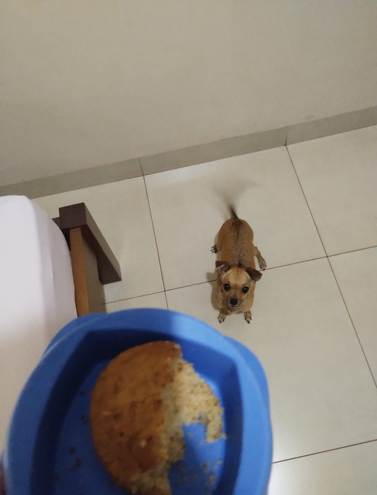

Sobre a Pipoca
A vida da Pipoca não é muito complicada. Ela passeia, come, dorme, pede carinho e depois dorme mais um pouco.
Um dia normal da Pipoca
- De manhã ela acorda a dona porque quer passear e fazer suas necessidades.
- Depois do passeio ela volta pra casa, come alguns petiscos e vai deitar de novo.
- De tarde ela gosta de ir pro quintal tomar um solzinho.
- Também passa um bom tempo pedindo carinho, deitada no sofá e beliscando a ração.
- Quando a dona sai, ela fica esperando na sala, obviamente em cima do sofá.
- De noite ela vai dormir na cama com a dona.
Tier list da Pipoca
Se a Pipoca pudesse escolher o que fazer o dia inteiro, provavelmente seria assim:
- S Tier - Comer
- A Tier - Passear
- B Tier - Ficar no sofá
- C Tier - Dormir na cama
- D Tier - Tomar sol

Ficha da Pipoca
| Categoria | Sobre ela |
|---|---|
| Nome | Pipoca |
| Idade | 4 anos |
| Personalidade | Carinhosa e folgada |
| Maior talento | Dormir por horas |
| Mania | Ficar esperando a dona voltar |